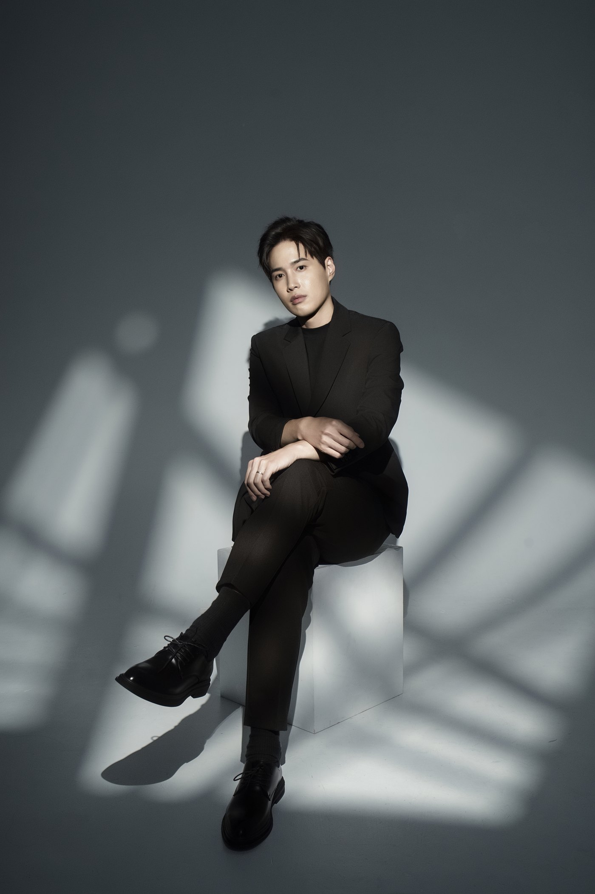
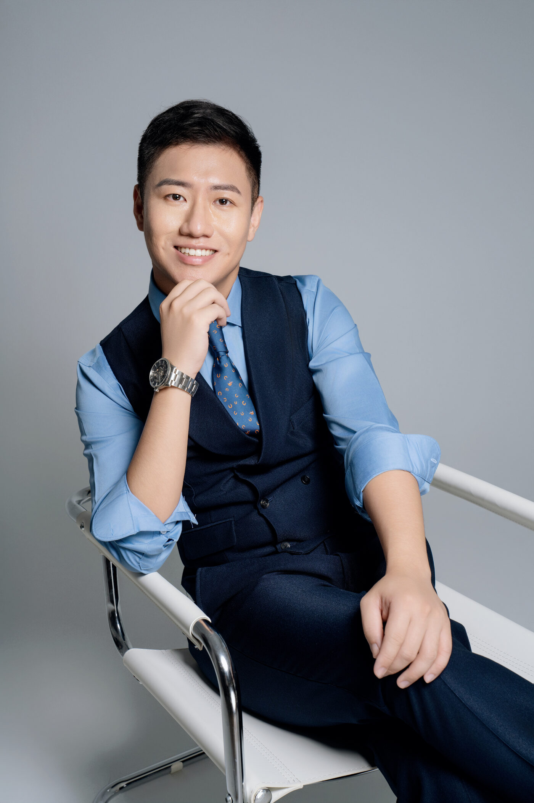
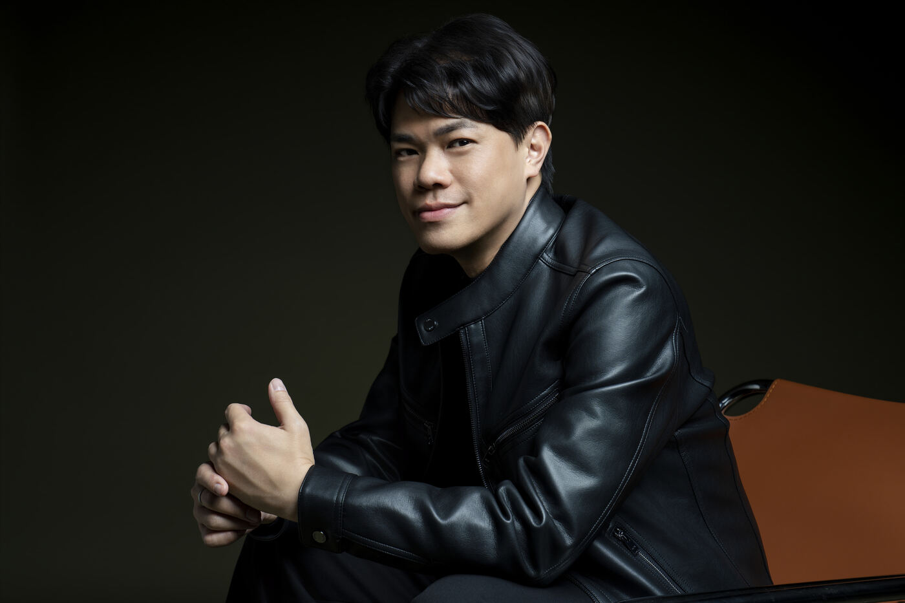
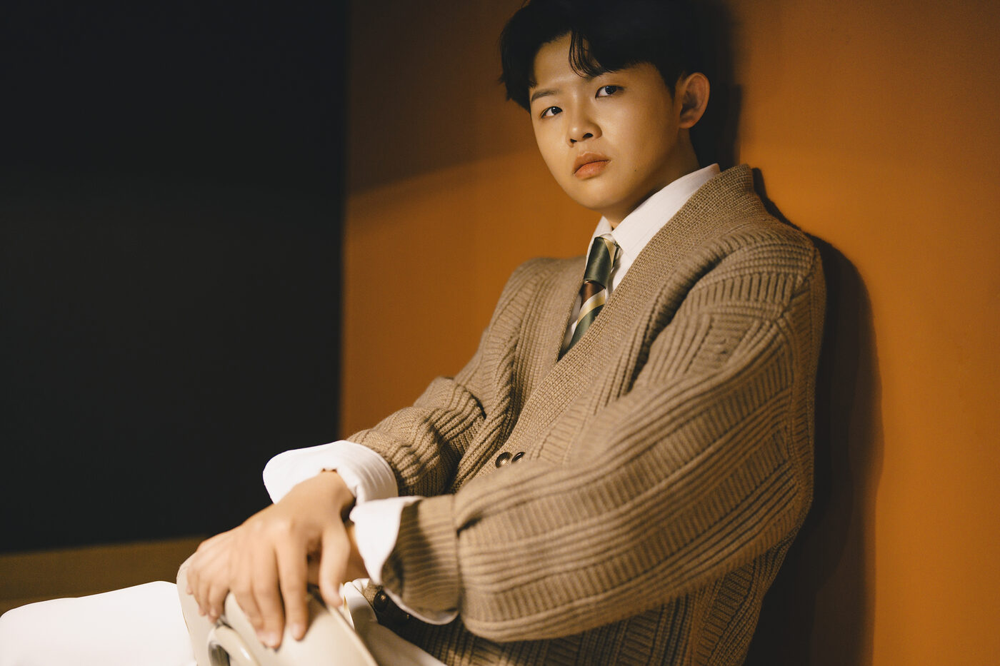
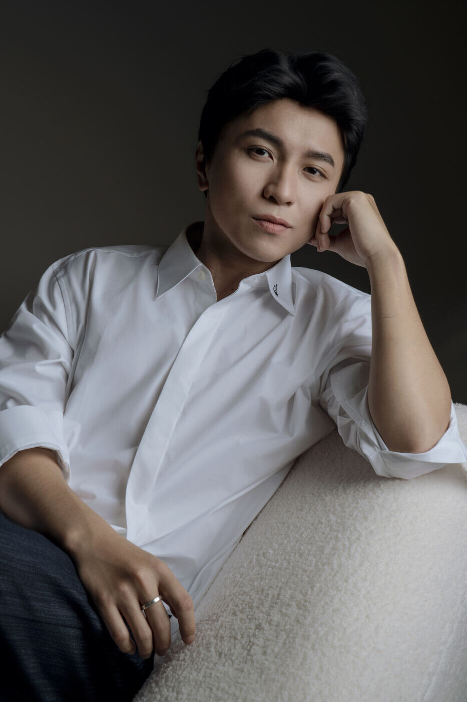

Author·作者
Credentials資歷
Writing專欄著作
攝影師負責捕捉、造型師負責執行、形象顧問負責決定方向。決定一張形象照成敗的，往往是快門之前的那個選擇。

AI 能生成一張完美的照片，卻無法替你決定：要讓世界認識你的哪一面。

十倍的價差，買的不是十倍好看的照片，而是清晰的定位、後期的應用。

拍得好看，不等於值得信任。客戶真正想知道的是：「我為什麼要相信你？」真正影響信任的決定，多數發生在拍攝之前。

一張好看的形象照，和一套能支撐個人品牌的影像系統，是兩件不同的事。

真實不是一個固定的樣子。形象定位，就是先決定此刻要讓世界認識你的哪一面。

形象照真正的底子，也就是角色定位、服裝與造型，在按下快門之前就決定了。